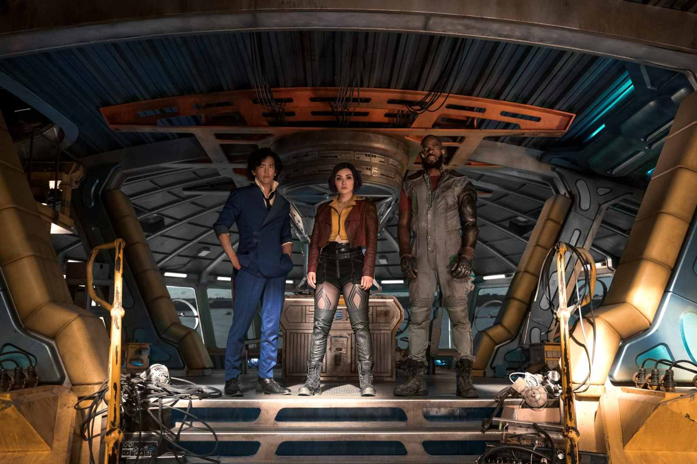
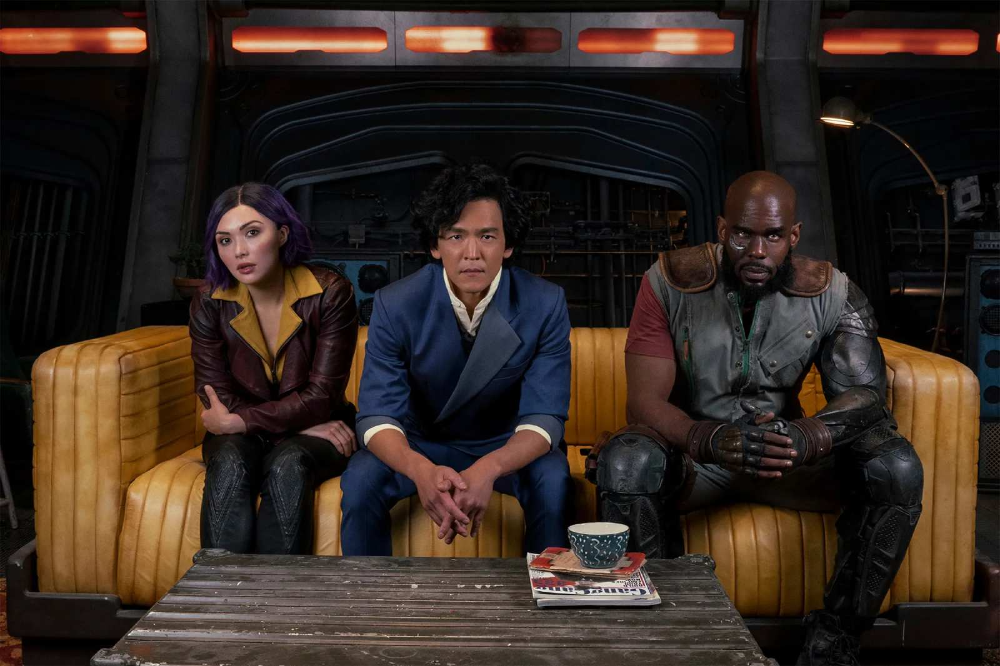
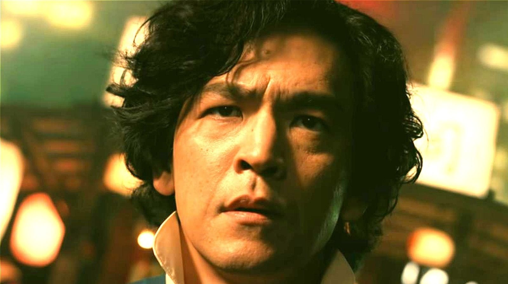
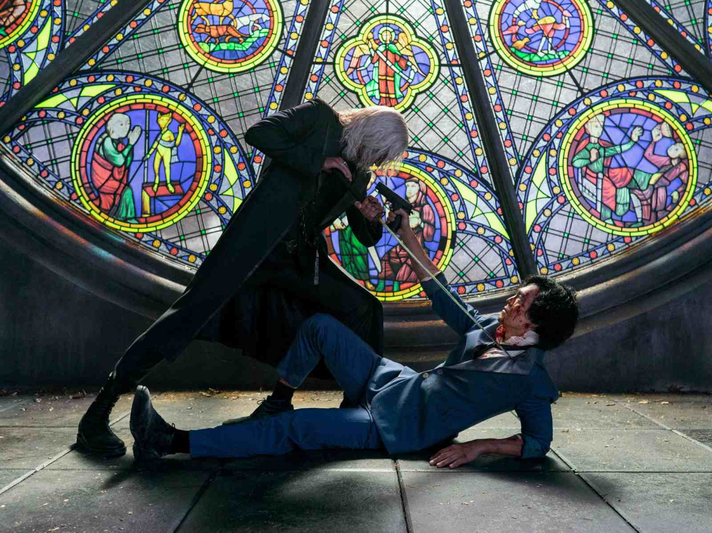

Live Action
Visión general
La adaptación en acción en vivo de "Cowboy Bebop" es una reinterpretación muy esperada de la popular serie de anime, que originalmente se emitió a finales de la década de 1990. La serie ha ganado una base de fanáticos dedicados a lo largo de los años, convirtiendo la adaptación en acción en vivo en un proyecto de gran interés tanto para los fanáticos como para los recién llegados.
La serie en acción en vivo sigue de cerca las aventuras del equipo de cazadores de recompensas, que consta de Spike Spiegel, Jet Black, Faye Valentine, Radical Ed y Ein. Mientras persiguen criminales por toda la galaxia, el programa explora temas de identidad, pérdida y las consecuencias del pasado.
Elenco y personajes
El elenco de la adaptación en acción en vivo incluye a John Cho como Spike Spiegel, Mustafa Shakir como Jet Black, Daniella Pineda como Faye Valentine y Alex Hassell como Vicious, entre otros. Las elecciones de casting han generado importantes discusiones y expectativas entre los fanáticos.
Estos actores dan nueva vida a los icónicos personajes, y los fanáticos están ansiosos por ver cómo interpretan sus roles en el entorno de acción en vivo.
Producción y fecha de estreno
La adaptación en acción en vivo de "Cowboy Bebop" ha estado en desarrollo durante varios años, con un enfoque en mantenerse fiel al material original mientras lo adapta a un nuevo medio. La serie está programada para incluir la misma música y estilo queridos por los fanáticos del anime original.
La serie está programada para su lanzamiento el [Insertar fecha de lanzamiento], y los fanáticos esperan con ansias la oportunidad de ver cómo se dan vida a sus cazadores de recompensas espaciales favoritos en la pantalla.
Expectativas
La anticipación por la adaptación en acción en vivo de "Cowboy Bebop" es alta, y muchos esperan que capture la esencia de la serie original. Sin embargo, adaptar un anime a un formato de acción en vivo puede ser un desafío, y los fanáticos están cautamente optimistas sobre el resultado.
En última instancia, el éxito de la serie dependerá de cuán bien equilibre el respeto al material original con la introducción de nuevos elementos para hacerlo una experiencia única y atractiva tanto para los fanáticos de toda la vida como para los recién llegados.